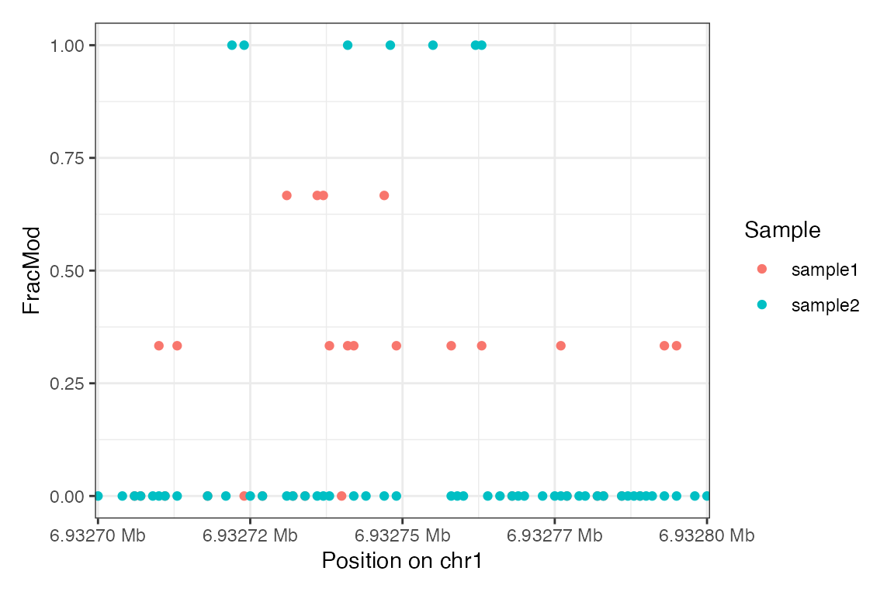
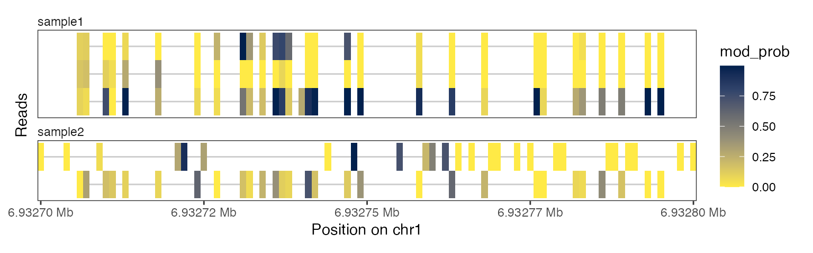
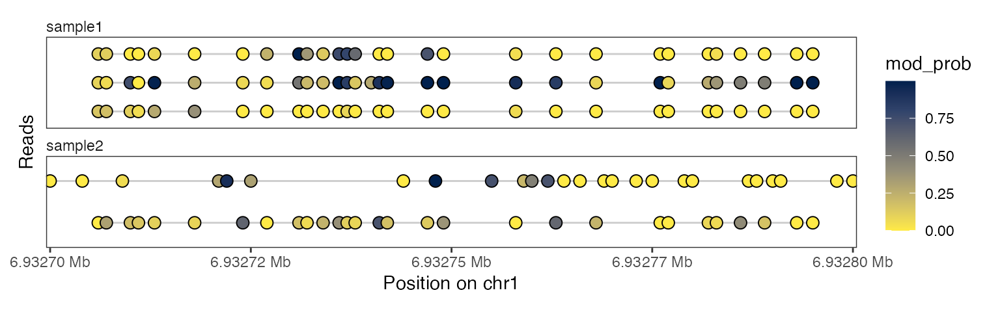
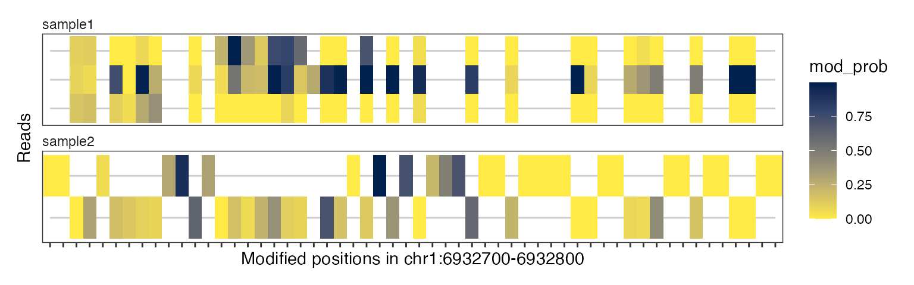
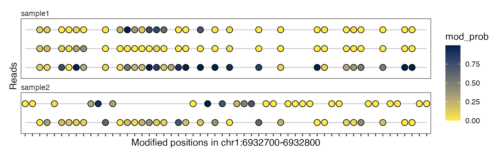
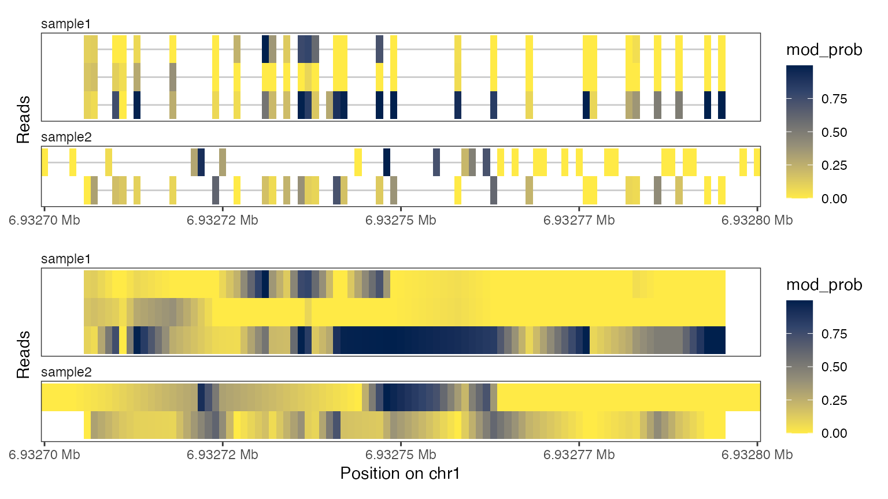
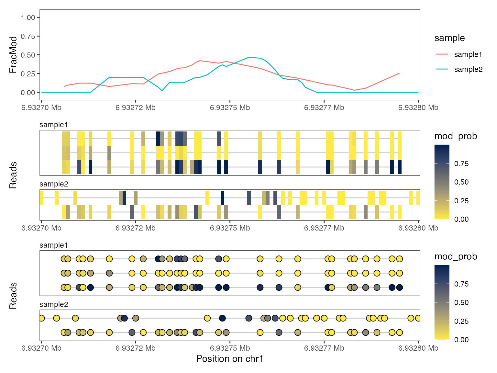
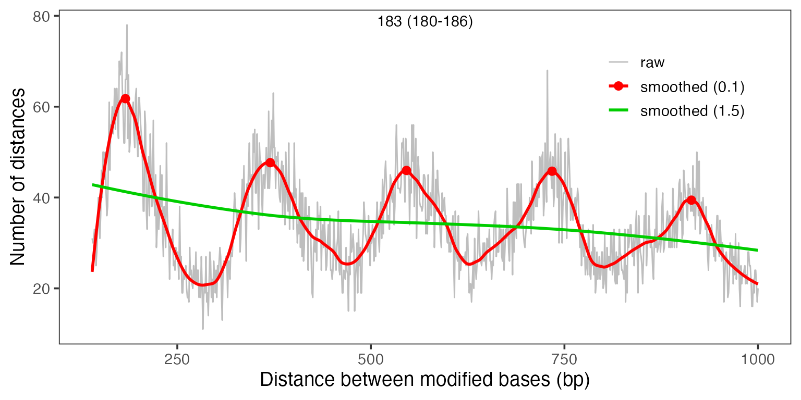
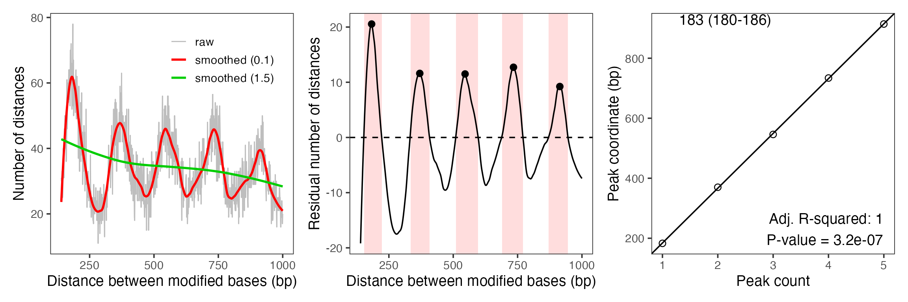

Exploring read-level footprinting data with `footprintR`
Source:vignettes/read-level-data.Rmd
read-level-data.RmdLoad data
We start the analysis by loading footprinting data at the level of
individual reads (for an example of working with summary-level data, see
vignette("using-footprintR")). Read-level data can be
extracted from modBam files (standard bam file with
modification data stored in MM and ML tags,
see SAMtags.pdf)
using readModBam(). This is the preferred way described
below.
Alternatively, read-level modification data can also be extracted
from modBam files using modkit (see
readModkitExtract() to read the output generated by
modkit extract).
The footprintR package contains small example
modBam files that were generated using the Dorado aligner:
# load packages
library(footprintR)
library(SummarizedExperiment)
library(SparseArray)
#> Warning: package 'SparseArray' was built under R version 4.6.0
# read-level 6mA data generated by 'dorado'
modbamfiles <- system.file("extdata",
c("6mA_1_10reads.bam", "6mA_2_10reads.bam"),
package = "footprintR")
names(modbamfiles) <- c("sample1", "sample2")Modification data is read from these files using
readModBam():
se <- readModBam(bamfiles = modbamfiles,
regions = "chr1:6940000-7000000",
modbase = "a",
verbose = TRUE,
BPPARAM = BiocParallel::SerialParam())
#> ℹ extracting base modifications from modBAM files
#> ℹ finding unique genomic positions...
#> ✔ finding unique genomic positions... [94ms]
#>
#> ℹ collapsed 17739 positions to 7967 unique ones
#> ✔ collapsed 17739 positions to 7967 unique ones [463ms]
#>
se
#> class: RangedSummarizedExperiment
#> dim: 7967 2
#> metadata(3): readLevelData variantPositions filteredOutReads
#> assays(1): mod_prob
#> rownames(7967): chr1:6925830:- chr1:6925834:- ... chr1:6941622:-
#> chr1:6941631:-
#> rowData names(0):
#> colnames(2): sample1 sample2
#> colData names(4): sample modbase n_reads readInfoThis will create a RangedSummarizedExperiment object
with positions in rows:
# rows are positions...
rowRanges(se)
#> UnstitchedGPos object with 7967 positions and 0 metadata columns:
#> seqnames pos strand
#> <Rle> <integer> <Rle>
#> chr1:6925830:- chr1 6925830 -
#> chr1:6925834:- chr1 6925834 -
#> chr1:6925836:- chr1 6925836 -
#> chr1:6925837:- chr1 6925837 -
#> chr1:6925841:- chr1 6925841 -
#> ... ... ... ...
#> chr1:6941611:- chr1 6941611 -
#> chr1:6941614:- chr1 6941614 -
#> chr1:6941620:- chr1 6941620 -
#> chr1:6941622:- chr1 6941622 -
#> chr1:6941631:- chr1 6941631 -
#> -------
#> seqinfo: 1 sequence from an unspecified genome; no seqlengthsJust like with summary-level data, columns correspond to samples
# ... and columns are samples
colData(se)
#> DataFrame with 2 rows and 4 columns
#> sample modbase n_reads
#> <character> <character> <integer>
#> sample1 sample1 a 3
#> sample2 sample2 a 2
#> readInfo
#> <List>
#> sample1 14.1428:20058:14801:...,16.0127:11305:11214:...,20.3082:12277:12227:...,...
#> sample2 9.67461:11834:11234:...,13.66480:10057:9898:...,...The sample names in the sample column are obtained from
the input files (here extractfiles), or if the files are
not named will be automatically assigned (using "s1",
"s2" and so on, assuming that each file corresponds to a
separate sample).
Read-level information is contained in a list under
readInfo, with one element per sample:
se$readInfo
#> List of length 2
#> names(2): sample1 sample2Each sample typically contains several reads (see
se$n_reads), which correspond to the rows of
se$readInfo, for example for "sample1":
se$readInfo$sample1
#> DataFrame with 3 rows and 5 columns
#> qscore read_length
#> <numeric> <integer>
#> sample1-233e48a7-f379-4dcf-9270-958231125563 14.1428 20058
#> sample1-d52a5f6a-a60a-4f85-913e-eada84bfbfb9 16.0127 11305
#> sample1-92e906ae-cddb-4347-a114-bf9137761a8d 20.3082 12277
#> aligned_length variant_label
#> <integer> <character>
#> sample1-233e48a7-f379-4dcf-9270-958231125563 14801 NA
#> sample1-d52a5f6a-a60a-4f85-913e-eada84bfbfb9 11214 NA
#> sample1-92e906ae-cddb-4347-a114-bf9137761a8d 12227 NA
#> aligned_fraction
#> <numeric>
#> sample1-233e48a7-f379-4dcf-9270-958231125563 0.737910
#> sample1-d52a5f6a-a60a-4f85-913e-eada84bfbfb9 0.991950
#> sample1-92e906ae-cddb-4347-a114-bf9137761a8d 0.995927Explore assay data
The single assay mod_prob is a DataFrame
with modification probabilities.
assayNames(se)
#> [1] "mod_prob"
m <- assay(se, "mod_prob")
m
#> DataFrame with 7967 rows and 2 columns
#> sample1 sample2
#> <NaMatrix> <NaMatrix>
#> chr1:6925830:- 0:NA:NA NA:NA
#> chr1:6925834:- 0:NA:NA NA:NA
#> chr1:6925836:- 0:NA:NA NA:NA
#> chr1:6925837:- 0:NA:NA NA:NA
#> chr1:6925841:- 0.275390625:NA:NA NA:NA
#> ... ... ...
#> chr1:6941611:- NA:NA:0.052734375 NA:NA
#> chr1:6941614:- NA:NA:0.130859375 NA:NA
#> chr1:6941620:- NA:NA:0.068359375 NA:NA
#> chr1:6941622:- NA:NA:0.060546875 NA:NA
#> chr1:6941631:- NA:NA:0.056640625 NA:NAIn order to store read-level data for variable numbers of reads per
sample, each sample column is not just a simple vector, but a
position-by-read NaMatrix (a sparse matrix object defined
in the SparseArray
package).
m$sample1
#> <7967 x 3 NaMatrix> of type "double" [nnacount=11300 (47%)]:
#> sample1-233e48a7-f379-4dcf-9270-958231125563
#> [1,] 0.0000000
#> [2,] 0.0000000
#> [3,] 0.0000000
#> [4,] 0.0000000
#> [5,] 0.2753906
#> ... .
#> [7963,] NA
#> [7964,] NA
#> [7965,] NA
#> [7966,] NA
#> [7967,] NA
#> sample1-d52a5f6a-a60a-4f85-913e-eada84bfbfb9
#> [1,] NA
#> [2,] NA
#> [3,] NA
#> [4,] NA
#> [5,] NA
#> ... .
#> [7963,] NA
#> [7964,] NA
#> [7965,] NA
#> [7966,] NA
#> [7967,] NA
#> sample1-92e906ae-cddb-4347-a114-bf9137761a8d
#> [1,] NA
#> [2,] NA
#> [3,] NA
#> [4,] NA
#> [5,] NA
#> ... .
#> [7963,] 0.05273438
#> [7964,] 0.13085938
#> [7965,] 0.06835938
#> [7966,] 0.06054688
#> [7967,] 0.05664062If a ‘flat’ matrix is needed, in which columns correspond to reads
instead of samples, it can be created using as.matrix().
Notice the number of columns in each of the objects:
ncol(se) # 2 samples
#> [1] 2
ncol(m$sample1) # 3 reads in "sample1"
#> [1] 3
ncol(m$sample2) # 2 reads in "sample2"
#> [1] 2
ncol(as.matrix(m)) # 5 reads in total
#> [1] 5One advantage of the grouping of reads per sample is that you can
easily perform per-sample operations using lapply (returns
a list) or endoapply (returns a
DataFrame):
lapply(m, ncol)
#> $sample1
#> [1] 3
#>
#> $sample2
#> [1] 2
endoapply(m, ncol)
#> DataFrame with 1 row and 2 columns
#> sample1 sample2
#> <integer> <integer>
#> 1 3 2The NaMatrix objects do not store NA values
and thus use much less memory compared to a normal (dense) matrix. The
NA values here occur at positions (rows) that are not
covered by the read of that column, and there are typically a large
fraction of NA values:
prod(dim(m$sample1)) # total number of values
#> [1] 23901
nnacount(m$sample1) # number of non-NA values
#> [1] 11300Important: These NA values have to be
excluded for example when calculating the average modification
probability for a position using mean(..., na.rm = TRUE),
otherwise the result will be NA for all incompletely
covered positions:
# modification probabilities at position "chr1:6928850:-"
m["chr1:6928850:-", ]
#> DataFrame with 1 row and 2 columns
#> sample1 sample2
#> <NaMatrix> <NaMatrix>
#> chr1:6928850:- 0.623046875:0.099609375:NA NA:NA
# WRONG: take the mean of all values (including NAs)
lapply(m["chr1:6928850:-", ], mean)
#> $sample1
#> [1] NA
#>
#> $sample2
#> [1] NA
# CORRECT: exclude the NA values (na.rm = TRUE)
lapply(m["chr1:6928850:-", ], mean, na.rm = TRUE)
#> $sample1
#> [1] 0.3613281
#>
#> $sample2
#> [1] NaNNote that for sample2, in which no read overlaps the selected
position, mean(..., na.rm = TRUE) returns
NaN.
In most cases it is preferable to use the convenience functions in
footprintR, such as flattenReadLevelAssay()
(see next section), to calculate summaries over reads instead of the
lapply(...) used above for illustration.
Summarize read-level data
Summarized data can be obtained from the read-level data by calculating a per-position summary over the reads in each sample:
se_summary <- flattenReadLevelAssay(
se, statistics = c("Nmod", "Nvalid", "FracMod", "Pmod", "AvgConf"))As discussed above, this will correctly exclude non-observed values
and return zero values (for count assays "Nmod",
“Nvalid”) or NaN for assays with fractions
("FracMod", "Pmod" and
"AvgConf"), for positions without any observed data (see
for example "Pmod" in "sample2"):
assay(se_summary, "Pmod")["chr1:6928850:-", ]
#> sample1 sample2
#> 0.3613281 NaNThe summary statistics to calculate are selected using the
statistics argument. By default,
flattenReadLevelAssay() will count the number of modified
(Nmod) and total (Nvalid) reads at each
position and sample, and calculate the fraction of modified bases from
the two (FracMod).
assay(se_summary, "Nmod")["chr1:6928850:-", ]
#> sample1 sample2
#> 1 0
assay(se_summary, "Nvalid")["chr1:6928850:-", ]
#> sample1 sample2
#> 2 0
assay(se_summary, "FracMod")["chr1:6928850:-", ]
#> sample1 sample2
#> 0.5 NaNIn the above example, we in addition also calculate the average
modification probability (Pmod) and the average confidence
of the modification calls per position (AvgConf). As we
have not changed the default keepReads = TRUE, we in
addition also keep the read-level assay from the input object
(mod_prob) in the returned object. Because of the grouping
of reads by sample in mod_prob, the dimensions of
read-level or summary-level objects remain identical:
# read-level data is retained in "mod_prob" assay
assayNames(se_summary)
#> [1] "mod_prob" "Nmod" "Nvalid" "FracMod" "Pmod" "AvgConf"
# ... which groups the reads by sample
assay(se_summary, "mod_prob")
#> DataFrame with 7967 rows and 2 columns
#> sample1 sample2
#> <NaMatrix> <NaMatrix>
#> chr1:6925830:- 0:NA:NA NA:NA
#> chr1:6925834:- 0:NA:NA NA:NA
#> chr1:6925836:- 0:NA:NA NA:NA
#> chr1:6925837:- 0:NA:NA NA:NA
#> chr1:6925841:- 0.275390625:NA:NA NA:NA
#> ... ... ...
#> chr1:6941611:- NA:NA:0.052734375 NA:NA
#> chr1:6941614:- NA:NA:0.130859375 NA:NA
#> chr1:6941620:- NA:NA:0.068359375 NA:NA
#> chr1:6941622:- NA:NA:0.060546875 NA:NA
#> chr1:6941631:- NA:NA:0.056640625 NA:NA
# the dimensions of read-level `se` and summarized `se_summary` are identical
dim(se)
#> [1] 7967 2
dim(se_summary)
#> [1] 7967 2Plot data
The read-level data can then be visualized just like the
summary-level data using plotRegion.
For reference, here we plot the summary-level data:
plotRegion(se_summary, region = "chr1:6932700-6932800",
tracks = list(list(trackData = "FracMod",
trackType = "Point")))
… and here we plot the read-level data of the same region:
plotRegion(se, region = "chr1:6932700-6932800",
tracks = list(list(trackData = "mod_prob",
trackType = "Heatmap")))
plotRegion(se, region = "chr1:6932700-6932800",
tracks = list(list(trackData = "mod_prob",
trackType = "Lollipop")))
The x-axis in these plots is in “base-space”, meaning that it shows the coordinates of genomic bases on which modifications can be irregularly spaced. Alternatively, we can also generate these plot in “modbase-space”, in which only modified bases are shown and the gaps between them are removed:
plotRegion(se, region = "chr1:6932700-6932800",
tracks = list(list(trackData = "mod_prob",
trackType = "Heatmap")),
modbaseSpace = TRUE)
plotRegion(se, region = "chr1:6932700-6932800",
tracks = list(list(trackData = "mod_prob",
trackType = "Lollipop")),
modbaseSpace = TRUE)
6mA modifications can only be observed for adenine positions. The
Heatmap plot type with interpolate = TRUE
fills in the unobserved positions in each read between adenines using
linear interpolation. While this makes the plot appear very smooth, it
should be taken with a grain of salt: These positions are
unobserved and could look different from the interpolated
states.
plotRegion(se, region = "chr1:6932700-6932800",
tracks = list(list(trackData = "mod_prob",
trackType = "Heatmap"),
list(trackData = "mod_prob",
trackType = "Heatmap",
interpolate = TRUE)))
As mentioned above, the read-level data is still contained in the
summary object se_summary, so we can plot both
summary-level and read-level data simultaneously with this object as
input:
plotRegion(se_summary, region = "chr1:6932700-6932800",
tracks = list(list(trackData = "FracMod",
trackType = "Smooth"),
list(trackData = "mod_prob",
trackType = "Heatmap"),
list(trackData = "mod_prob",
trackType = "Lollipop")))
It is also possible to adapt some of the settings for the individual
tracks - for more details we refer to the help page for
plotRegion(), where all arguments for the respective tracks
are listed.
Analyze read-level data
Amongst other things, single-molecule footprinting data allows to measure the average distance between neighboring nucleosome particles, the so called nucleosome repeat length or NRL. Traditionally, this was measured using MNase-seq data (phasogram analysis, see Valouev et al., Nature 2011, doi:10.1038/nature10002), which required millions of reads for an accurate estimate. By switching to measuring distances between modified bases within reads, we can extract much more information per read and already manage to get accurate estimates from a handful of reads:
moddist <- calcModbaseSpacing(se)
print(estimateNRL(moddist$sample1)[1:2])
#> $nrl
#> [1] 182.6
#>
#> $nrl.CI95
#> 2.5 % 97.5 %
#> 179.5475 185.6525
plotModbaseSpacing(moddist$sample1)
plotModbaseSpacing(moddist$sample1, detailedPlots = TRUE)
Session info
sessioninfo::session_info()
#> ─ Session info ───────────────────────────────────────────────────────────────
#> setting value
#> version R version 4.5.0 Patched (2025-04-13 r88139)
#> os macOS Sonoma 14.7.4
#> system aarch64, darwin20
#> ui X11
#> language en
#> collate en_US.UTF-8
#> ctype en_US.UTF-8
#> tz UTC
#> date 2025-04-14
#> pandoc 3.1.11 @ /usr/local/bin/ (via rmarkdown)
#> quarto NA
#>
#> ─ Packages ───────────────────────────────────────────────────────────────────
#> package * version date (UTC) lib source
#> abind * 1.4-8 2024-09-12 [1] CRAN (R 4.5.0)
#> Biobase * 2.67.0 2024-11-25 [1] Bioconductor 3.21 (R 4.5.0)
#> BiocGenerics * 0.53.6 2025-01-27 [1] Bioconductor 3.21 (R 4.5.0)
#> BiocIO 1.17.2 2025-04-08 [1] Bioconductor 3.21 (R 4.5.0)
#> BiocParallel 1.41.5 2025-04-01 [1] Bioconductor 3.21 (R 4.6.0)
#> Biostrings 2.75.4 2025-02-21 [1] Bioconductor 3.21 (R 4.5.0)
#> bitops 1.0-9 2024-10-03 [1] CRAN (R 4.5.0)
#> BSgenome 1.75.1 2025-02-05 [1] Bioconductor 3.21 (R 4.5.0)
#> bslib 0.9.0 2025-01-30 [1] CRAN (R 4.5.0)
#> cachem 1.1.0 2024-05-16 [1] CRAN (R 4.5.0)
#> cli 3.6.4 2025-02-13 [1] CRAN (R 4.5.0)
#> codetools 0.2-20 2024-03-31 [2] CRAN (R 4.5.0)
#> colorspace 2.1-1 2024-07-26 [1] CRAN (R 4.5.0)
#> crayon 1.5.3 2024-06-20 [1] CRAN (R 4.5.0)
#> curl 6.2.2 2025-03-24 [1] CRAN (R 4.6.0)
#> data.table 1.17.0 2025-02-22 [1] CRAN (R 4.5.0)
#> DelayedArray 0.33.6 2025-02-14 [1] Bioconductor 3.21 (R 4.5.0)
#> desc 1.4.3 2023-12-10 [1] CRAN (R 4.5.0)
#> digest 0.6.37 2024-08-19 [1] CRAN (R 4.5.0)
#> dplyr 1.1.4 2023-11-17 [1] CRAN (R 4.5.0)
#> evaluate 1.0.3 2025-01-10 [1] CRAN (R 4.5.0)
#> farver 2.1.2 2024-05-13 [1] CRAN (R 4.5.0)
#> fastmap 1.2.0 2024-05-15 [1] CRAN (R 4.5.0)
#> footprintR * 0.3.3 2025-04-14 [1] Bioconductor
#> fs 1.6.6 2025-04-12 [1] CRAN (R 4.5.0)
#> generics * 0.1.3 2022-07-05 [1] CRAN (R 4.5.0)
#> GenomeInfoDb * 1.43.4 2025-01-26 [1] Bioconductor 3.21 (R 4.5.0)
#> GenomeInfoDbData 1.2.14 2025-03-21 [1] Bioconductor
#> GenomicAlignments 1.43.0 2024-11-26 [1] Bioconductor 3.21 (R 4.5.0)
#> GenomicRanges * 1.59.1 2024-11-25 [1] Bioconductor 3.21 (R 4.5.0)
#> ggforce 0.4.2 2024-02-19 [1] CRAN (R 4.5.0)
#> ggplot2 3.5.2 2025-04-09 [1] CRAN (R 4.5.0)
#> glue 1.8.0 2024-09-30 [1] CRAN (R 4.5.0)
#> gtable 0.3.6 2024-10-25 [1] CRAN (R 4.5.0)
#> htmltools 0.5.8.1 2024-04-04 [1] CRAN (R 4.5.0)
#> httr 1.4.7 2023-08-15 [1] CRAN (R 4.5.0)
#> IRanges * 2.41.3 2025-02-12 [1] Bioconductor 3.21 (R 4.5.0)
#> jquerylib 0.1.4 2021-04-26 [1] CRAN (R 4.5.0)
#> jsonlite 2.0.0 2025-03-27 [1] CRAN (R 4.6.0)
#> knitr 1.50 2025-03-16 [1] CRAN (R 4.6.0)
#> labeling 0.4.3 2023-08-29 [1] CRAN (R 4.5.0)
#> lattice 0.22-7 2025-04-02 [2] CRAN (R 4.5.0)
#> lifecycle 1.0.4 2023-11-07 [1] CRAN (R 4.5.0)
#> magrittr 2.0.3 2022-03-30 [1] CRAN (R 4.5.0)
#> MASS 7.3-65 2025-02-28 [2] CRAN (R 4.5.0)
#> Matrix * 1.7-3 2025-03-11 [2] CRAN (R 4.5.0)
#> MatrixGenerics * 1.19.1 2025-01-09 [1] Bioconductor 3.21 (R 4.5.0)
#> matrixStats * 1.5.0 2025-01-07 [1] CRAN (R 4.5.0)
#> munsell 0.5.1 2024-04-01 [1] CRAN (R 4.5.0)
#> patchwork 1.3.0 2024-09-16 [1] CRAN (R 4.5.0)
#> pillar 1.10.2 2025-04-05 [1] CRAN (R 4.5.0)
#> pkgconfig 2.0.3 2019-09-22 [1] CRAN (R 4.5.0)
#> pkgdown 2.1.1.9000 2025-03-26 [1] Github (r-lib/pkgdown@66477c0)
#> polyclip 1.10-7 2024-07-23 [1] CRAN (R 4.5.0)
#> purrr 1.0.4 2025-02-05 [1] CRAN (R 4.5.0)
#> R6 2.6.1 2025-02-15 [1] CRAN (R 4.5.0)
#> ragg 1.4.0 2025-04-10 [1] CRAN (R 4.5.0)
#> Rcpp 1.0.14 2025-01-12 [1] CRAN (R 4.5.0)
#> RCurl 1.98-1.17 2025-03-22 [1] CRAN (R 4.6.0)
#> restfulr 0.0.15 2022-06-16 [1] CRAN (R 4.5.0)
#> rjson 0.2.23 2024-09-16 [1] CRAN (R 4.5.0)
#> rlang 1.1.6 2025-04-11 [1] CRAN (R 4.5.0)
#> rmarkdown 2.29 2024-11-04 [1] CRAN (R 4.5.0)
#> Rsamtools 2.23.1 2024-12-01 [1] Bioconductor 3.21 (R 4.5.0)
#> rtracklayer 1.67.1 2025-02-19 [1] Bioconductor 3.21 (R 4.5.0)
#> S4Arrays * 1.7.3 2025-02-09 [1] Bioconductor 3.21 (R 4.5.0)
#> S4Vectors * 0.45.4 2025-02-12 [1] Bioconductor 3.21 (R 4.5.0)
#> sass 0.4.10 2025-04-11 [1] CRAN (R 4.5.0)
#> scales 1.3.0 2023-11-28 [1] CRAN (R 4.5.0)
#> sessioninfo 1.2.3 2025-02-05 [1] CRAN (R 4.5.0)
#> SparseArray * 1.7.7 2025-03-19 [1] Bioconductor 3.21 (R 4.6.0)
#> SummarizedExperiment * 1.37.0 2024-11-25 [1] Bioconductor 3.21 (R 4.5.0)
#> systemfonts 1.2.2 2025-04-04 [1] CRAN (R 4.6.0)
#> textshaping 1.0.0 2025-01-20 [1] CRAN (R 4.6.0)
#> tibble 3.2.1 2023-03-20 [1] CRAN (R 4.5.0)
#> tidyr 1.3.1 2024-01-24 [1] CRAN (R 4.5.0)
#> tidyselect 1.2.1 2024-03-11 [1] CRAN (R 4.5.0)
#> tweenr 2.0.3 2024-02-26 [1] CRAN (R 4.5.0)
#> UCSC.utils 1.3.1 2025-01-15 [1] Bioconductor 3.21 (R 4.5.0)
#> vctrs 0.6.5 2023-12-01 [1] CRAN (R 4.5.0)
#> viridisLite 0.4.2 2023-05-02 [1] CRAN (R 4.5.0)
#> withr 3.0.2 2024-10-28 [1] CRAN (R 4.5.0)
#> xfun 0.52 2025-04-02 [1] CRAN (R 4.6.0)
#> XML 3.99-0.18 2025-01-01 [1] CRAN (R 4.5.0)
#> XVector 0.47.2 2025-01-08 [1] Bioconductor 3.21 (R 4.5.0)
#> yaml 2.3.10 2024-07-26 [1] CRAN (R 4.5.0)
#> zoo 1.8-14 2025-04-10 [1] CRAN (R 4.5.0)
#>
#> [1] /Users/runner/work/_temp/Library
#> [2] /Library/Frameworks/R.framework/Versions/4.5-arm64/Resources/library
#> * ── Packages attached to the search path.
#>
#> ──────────────────────────────────────────────────────────────────────────────